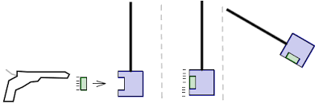

← Back to Concepts
Solving Collision Problems
Solving collision problems involves applying the principle of momentum conservation—and sometimes kinetic energy conservation—depending on the type of collision.
General Strategy
- Identify the type of collision: elastic, inelastic, or perfectly inelastic
- Apply conservation of momentum: \( m_1v_{1,i} + m_2v_{2,i} = m_1v_{1,f} + m_2v_{2,f} \)
- Use kinetic energy conservation only if the collision is elastic
- Solve algebraically or plug in values if known
Example 1: Perfectly Inelastic Collision
Problem: A 1.5 kg cart moving at 2 m/s collides with a 0.5 kg cart at rest. They stick together. What is their final velocity?
Step 1: Identify the type
Perfectly inelastic – objects stick together, momentum conserved, KE not.
Step 2: Apply conservation of momentum
\[
v_f = \frac{m_1v_{1,i} + m_2v_{2,i}}{m_1 + m_2}
\]
Step 3: Plug in values
\[
v_f = \frac{1.5(2) + 0.5(0)}{1.5 + 0.5} = \frac{3}{2} = 1.5 \, \text{m/s}
\]
Answer: They move together at 1.5 m/s.
Example 2: Elastic Collision (Equal Masses)
Problem: A 0.6 kg ball moving at 3 m/s hits a stationary 0.6 kg ball. What are the final velocities?
Step 1: Elastic collision with equal masses
In 1D, identical masses simply swap velocities in an elastic collision.
Step 2: Final velocities
\[
v_{1,f} = 0 \quad v_{2,f} = 3 \, \text{m/s}
\]
Answer: First ball stops; second ball moves at 3 m/s.
Example 3: Elastic Collision (Unequal Masses)
Problem: A 2 kg cart moving at 4 m/s hits a 1 kg stationary cart. What are the final velocities if the collision is elastic?
Step 1: Use momentum and kinetic energy conservation
\[
v_{1,f} = \frac{m_1 - m_2}{m_1 + m_2} v_{1,i} + \frac{2m_2}{m_1 + m_2} v_{2,i}
\]
\[
v_{2,f} = \frac{2m_1}{m_1 + m_2} v_{1,i} + \frac{m_2 - m_1}{m_1 + m_2} v_{2,i}
\]
Step 2: Plug in values
\[
v_{1,f} = \frac{2 - 1}{3} \cdot 4 = \frac{1}{3} \cdot 4 = 1.33 \, \text{m/s}
\]
\[
v_{2,f} = \frac{2 \cdot 2}{3} \cdot 4 = \frac{4}{3} \cdot 4 = 5.33 \, \text{m/s}
\]
Answer: Cart 1: 1.33 m/s, Cart 2: 5.33 m/s
Example 4: Inelastic but Not Perfectly
Problem: A 3 kg object moving at 6 m/s hits a 2 kg object moving at 2 m/s. After colliding, they bounce off with different velocities. Final velocity of object 2 is 4 m/s. What is object 1’s final velocity?
Step 1: Use momentum conservation
\[
m_1v_{1,i} + m_2v_{2,i} = m_1v_{1,f} + m_2v_{2,f}
\]
Step 2: Plug in knowns
\[
3(6) + 2(2) = 3v_{1,f} + 2(4)
\Rightarrow 18 + 4 = 3v_{1,f} + 8
\Rightarrow 22 - 8 = 3v_{1,f}
\Rightarrow v_{1,f} = \frac{14}{3} \approx 4.67 \, \text{m/s}
\]
Answer: Object 1’s final velocity is approximately 4.67 m/s
Example 5: Kinetic Energy Loss
Problem: A 2 kg object moving at 3 m/s collides with a 2 kg object at rest. They stick together. How much kinetic energy is lost?
Step 1: Initial Kinetic Energy
\[
KE_i = \frac{1}{2} m v^2 = \frac{1}{2}(2)(3)^2 = 9 \text{ J}
\]
Step 2: Final Velocity
\[
v_f = \frac{2(3) + 2(0)}{4} = 1.5 \text{ m/s}
\]
Step 3: Final Kinetic Energy
\[
KE_f = \frac{1}{2}(4)(1.5)^2 = \frac{1}{2}(4)(2.25) = 4.5 \text{ J}
\]
Step 4: Energy Lost
\[
\Delta KE = KE_f - KE_i = 4.5 - 9 = -4.5 \text{ J}
\]
Answer: 4.5 J of kinetic energy is lost.
Example 6: Percent KE Loss
Problem: In the previous example, what percent of the initial kinetic energy is lost?
\[
\% \text{ Loss} = \frac{|KE_f - KE_i|}{KE_i} \times 100 = \frac{4.5}{9} \times 100 = 50\%
\]
Answer: 50% of the initial kinetic energy was lost in the collision.
Example 7: Ballistic Pendulum

Problem: A 0.02 kg bullet traveling at 300 m/s embeds into a 1 kg wooden block hanging from a string. How high does the block-bullet system rise after the collision?
Step 1: Use conservation of momentum to find velocity after collision
\[
v_f = \frac{m_1v_{1,i}}{m_1 + m_2} = \frac{(0.02)(300)}{1.02} \approx 5.88 \text{ m/s}
\]
Step 2: Use conservation of energy to find height
\[
KE = PE \Rightarrow \frac{1}{2}(1.02)(5.88)^2 = (1.02)(9.8)h
\Rightarrow h \approx \frac{17.6}{9.996} \approx 1.76 \text{ m}
\]
Answer: The system rises approximately 1.76 meters.
Key Tips for Solving
- Always write the momentum conservation equation first
- If elastic, write the kinetic energy equation or use special formulas
- For perfectly inelastic, use the combined mass final velocity formula
- Draw before/after diagrams to visualize motion
Summary
Collision problems are highly solvable with momentum conservation. The collision type tells you whether you can also use kinetic energy conservation. Practice identifying types and setting up equations systematically!